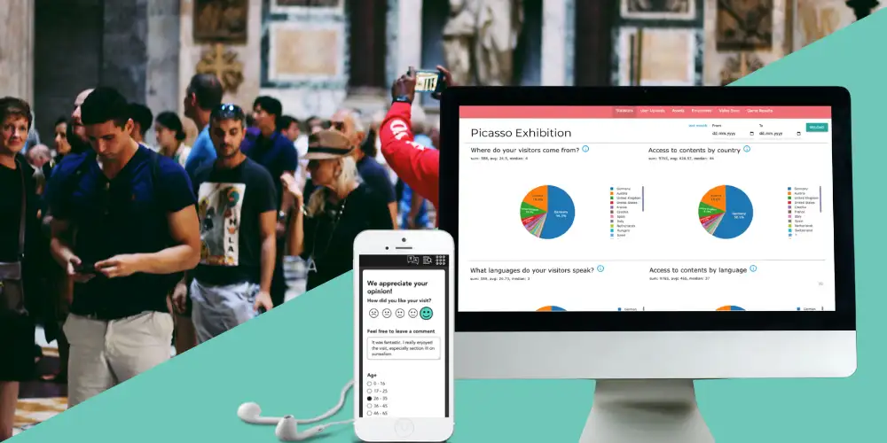
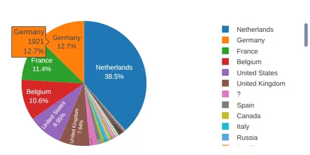
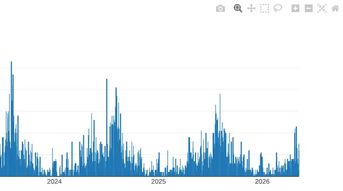
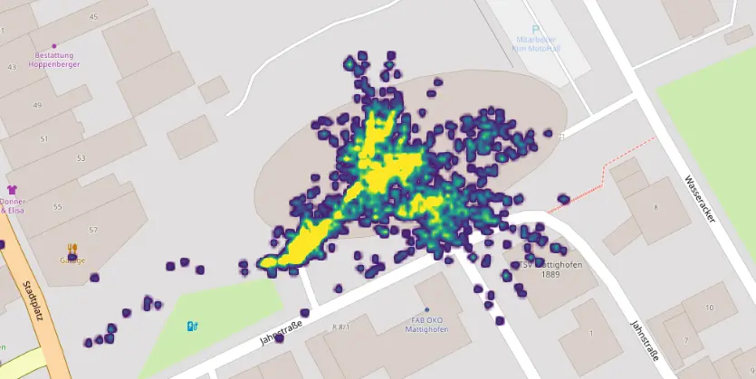

Equipo de Nubart
Desarrollo de negocio
Por qué las audioguías con códigos QR ofrecen a los museos mejores datos sobre sus visitantes que las apps o los dispositivos

La mayoría de los museos saben cuántas entradas vendieron ayer. Muchos menos saben qué idiomas utilizaron realmente los visitantes, qué salas se saltaron o de qué países procedían.
Toda tecnología de audioguía genera datos. Pero no los mismos datos, ni con el mismo nivel de exhaustividad. Entender la diferencia es importante, porque para la dirección de un museo, el tipo equivocado de datos es una forma de invisibilidad disfrazada de información.
El visitante o la visita, pero raramente las dos cosas
El panorama actual de las audioguías se divide en tres grandes enfoques: dispositivos dedicados (o sea, los aparatos tradicionales), apps nativas y guías web. Cada uno de esos sistemas tiene sus ventajas. Pero cuando hablamos de conocimiento sobre la propia audiencia, tienen un punto ciego. Solo uno cubre las dos dimensiones que un museo necesita realmente.
Los dispositivos dedicados, que se entregan en la taquilla o en el mostrador de información, permiten saber cómo se ha utilizado la audioguía. Los modelos más avanzados registran qué pistas se reprodujeron, en qué orden y durante cuánto tiempo. Estos datos operativos sin duda son útiles. Pero lo que el dispositivo no nos puede transmitir es información sobre el visitante que lo utiliza: de dónde viene, qué idioma habla en casa o si ya había visitado antes el museo. El dispositivo es anónimo por diseño. Sabe cosas sobre la visita, pero nada sobre el visitante.
Las apps nativas, descargadas desde App Store o Google Play, invierten el problema. Tanto Apple App Store Connect como Google Play Console ofrecen datos agregados sobre sus usuarios a los desarrolladores: país en el que el usuario tiene registrada su cuenta, idioma preferido, tipo de dispositivo. Esto permite saber algo sobre quién descargó la app. Lo que no nos permite saber con fiabilidad es qué ocurrió durante su visita al museo. Las analíticas de las tiendas de apps están enfocadas en el proceso de adquisición: cómo un usuario ha descubierto o instalado su app. El comportamiento durante la visita (qué salas visitó, cuánto tiempo permaneció en el museo o qué audios escuchó) no forma parte de esos datos. Para medirlo, el desarrollador debe construir e instrumentar su propia capa analítica sobre la aplicación, una inversión adicional considerable que la mayoría de proveedores de apps para museos no ha realizado. Además, en iOS, el seguimiento del comportamiento depende cada vez más del consentimiento explícito del usuario (el App Tracking Transparency de Apple), y muchos visitantes lo rechazan. El resultado es un conjunto de datos con lagunas precisamente allí donde el museo más los necesita.
Existe además una razón estructural por la que las analíticas avanzadas dentro de apps son poco frecuentes: la economía del desarrollo de apps nativas juega en su contra. Cada museo suele querer su propia app personalizada, con su propia ficha en App Store y Google Play, sus propios ciclos de revisión y actualización. Un proveedor que trabaja para cincuenta museos debe gestionar cincuenta distribuciones distintas. Construir una infraestructura analítica sofisticada y compartida sobre esa complejidad operativa supone una inversión considerable que el modelo de app nativa por museo rara vez puede sostener. No es una crítica a esos proveedores; es simplemente una consecuencia de su arquitectura.
Una audioguía web, técnicamente una Progressive Web App o PWA, accesible mediante un código QR, es el único enfoque que puede cubrir simultáneamente ambas dimensiones. Como el visitante utiliza el navegador de su propio móvil, en lugar de una app descargada o un dispositivo prestado, el propio navegador se convierte en una fuente pasiva de datos ricos y anónimos tanto sobre la persona como sobre la visita. Sin registro. Sin diálogos de permisos. Sin necesidad de una capa de rastreo invasiva.
Lo que el navegador ya sabe
Cuando un visitante escanea un código QR y abre la guía en el navegador de su móvil, está cargando una aplicación web. Los navegadores exponen por diseño una serie de señales que pueden leerse automáticamente en el servidor como parte de cualquier petición web estándar.
La más importante para los museos es la configuración regional, que incluye idioma y país. El navegador del visitante está configurado en su idioma y país de origen: de-AT para un germanohablante austríaco, ja-JP para un visitante japonés o fr-BE para un belga francófono. Esta información se transmite automáticamente como parte del protocolo web estándar, sin necesidad de formularios, cuentas de usuario ni preguntas demográficas.
Además del idioma y el origen, el navegador permite calcular el tiempo de permanencia: el intervalo entre la primera y la última interacción del visitante con la guía durante una sesión. Esto proporciona un indicador muy útil del tiempo pasado en el museo. Nubart no almacena ni utiliza direcciones IP. Las señales utilizadas son anónimas y se agregan desde el mismo momento de su recogida.
Para los museos, esto hace posible algo que las tecnologías tradicionales de audioguías rara vez consiguen: obtener información significativa sobre el público sin exigir a los visitantes que renuncien a su anonimato.
Datos propios, bajo control del museo
Para los museos sujetos al RGPD, las analíticas de visitantes no son solo una cuestión técnica. También son una cuestión de gobernanza: quién posee los datos, quién los procesa y dónde terminan almacenados.
Muchos museos dependen de plataformas analíticas de terceros para comprender a su audiencia digital. Incluso cuando esas plataformas son compatibles con el RGPD, la relación con los datos sigue pasando por un proveedor externo: sus servidores, sus condiciones de servicio, sus políticas de retención de datos y sus posibles cambios futuros. Para instituciones que deben rendir cuentas ante administraciones públicas, patronatos, organismos financiadores o ministerios de cultura, esa dependencia merece un análisis cuidadoso. Conviene recordar además que muchas plataformas analíticas generalistas fueron diseñadas originalmente para publicidad y optimización de marketing, no para instituciones culturales que gestionan públicos anónimos. El encaje institucional nunca ha sido perfecto.
Con las apps nativas existe además una cuestión específica relacionada con la soberanía de los datos. Las analíticas que proporciona la tienda de aplicaciones —descargas, distribución geográfica o señales de retención— residen en Apple App Store Connect o Google Play Console, dentro de la cuenta del desarrollador. El museo es, en la práctica, un invitado dentro del entorno de datos del proveedor, no el propietario real de esos datos. Si el museo cambia de proveedor o la relación termina, el acceso al histórico desaparece con él.
Por eso Nubart decidió desarrollar y operar toda su infraestructura estadística internamente. Ninguna plataforma analítica de terceros accede a los datos. Como el sistema no depende de cookies de terceros ni de scripts externos de seguimiento, los datos tampoco se ven afectados por herramientas de privacidad que bloquean cada vez más las analíticas convencionales, como el navegador Brave o Intelligent Tracking Prevention de Safari. Lo que el museo ve en su panel de estadísticas es una relación analítica de primera parte y no una dependencia de un ecosistema publicitario externo: datos recogidos en nombre del museo, procesados en nombre del museo y no compartidos ni vendidos a terceros.
El resultado no es solo una mayor privacidad para el visitante, sino también continuidad institucional. El museo mantiene una relación estable e ininterrumpida con su propia inteligencia de públicos a lo largo del tiempo.
De los datos de comportamiento a la inteligencia institucional
Las analíticas tradicionales en museos suelen separar el comportamiento digital del comportamiento físico. Las audioguías basadas en navegador conectan ambos mundos. El panel de estadísticas está disponible para todos los clientes de Nubart GUIDE desde el primer día de implementación y viene incluido de serie; no existe un nivel analítico de pago.
Los datos cubren las dos dimensiones mencionadas anteriormente: quién es el visitante y qué ocurrió realmente durante su visita.
Desde el punto de vista del visitante:

- País de origen: permite comprobar si el público real del museo coincide con sus hipótesis turísticas y si determinadas traducciones, colaboraciones o campañas de difusión están justificadas.
- Idioma nativo: se analiza independientemente de los patrones por país, lo que permite distinguir entre turistas internacionales y comunidades locales multilingües. Un museo de Berlín que observe un alto uso del inglés podría asumir que se trata de turistas estadounidenses. Sin embargo, los datos de país de origen pueden revelar una gran comunidad local de expatriados, un público muy distinto que requiere estrategias de comunicación muy diferentes. Esto permite distinguir entre el turista y el vecino, asegurando que la relación con el público local sea tan estratégica y basada en datos como el marketing internacional.
- Dispositivos utilizados: proporciona el perfil técnico (sistema operativo y navegador) necesario para futuras decisiones digitales y trabajos de accesibilidad.
- Número total de visitantes que utilizaron la audioguía.
Desde el punto de vista de la visita:
- Tiempo de permanencia en el museo: calculado a partir del intervalo entre la primera y la última interacción del visitante, con parámetros de sesión configurables para adaptarse con precisión a distintos tamaños y distribuciones espaciales.
- Pistas de audio escuchadas: revelan qué contenidos interesaron realmente a los visitantes y cuáles omitieron.
- Uso por hora del día y día de la semana: útil para decisiones de personal, programación y planificación de exposiciones temporales.
- Actividad desglosada por país e idioma: conecta el origen del público con sus patrones reales de uso de la audioguía.
Cuando la audioguía tiene una estructura modular, con módulos separados para distintas plantas, alas o exposiciones temporales, cada módulo dispone de sus propias estadísticas independientes. Un museo con tres plantas obtiene tres conjuntos de datos distintos, no un único informe mezclado.
Un panel pensado para la gestión institucional, no solo para monitorizar

Los datos solo son útiles si pueden explorarse y utilizarse. El panel de Nubart es interactivo y permite filtrar por temporadas concretas o fechas de exposiciones temporales, activar o desactivar valores individuales para comparar el crecimiento interanual o aislar grupos específicos de idioma o país para analizarlos más de cerca. Y lo más importante: no se trata de un sistema cerrado. Todos los gráficos pueden descargarse como PNG para incluirlos en informes para patronatos, solicitudes de subvenciones o materiales de prensa, y determinados conjuntos de datos pueden exportarse como CSV para integrarlos en las propias herramientas de reporting o CRM del museo. Las analíticas se convierten así en infraestructura organizativa y no solo en visualizaciones dentro de un panel.
El gráfico de tiempo de permanencia permite configurar el intervalo de sesión y el umbral de uso antes de recalcular los datos, algo útil para adaptar las mediciones a la geometría específica de cada espacio.
Opcional: "geotracking" y mapas de calor de movimiento de visitantes

Es importante dejar algo claro desde el principio: la geolocalización es una función opcional basada en consentimiento explícito, y es fundamentalmente distinta del rastreo encubierto de ubicación asociado a la analítica comercial en retail. Cuando un visitante abre la audioguía, el navegador muestra una solicitud estándar preguntando si desea compartir su ubicación. Quien rechaza la solicitud utiliza igualmente la guía con normalidad, sin aportar ningún dato de localización. No se recopila nada de forma pasiva ni sin conocimiento del visitante.
En aquellos espacios donde se ofrece esta opción, los movimientos de los visitantes se registran como puntos GPS y se agregan en un mapa de calor superpuesto al plano del recinto. Esto lleva la visita física anónima a su conclusión lógica: el museo puede identificar qué galerías retienen más tiempo a los visitantes, qué salas suelen pasarse por alto y dónde se generan cuellos de botella naturales. Al visualizar estos puntos de congestión y las áreas menos visitadas, los museos pueden optimizar la distribución física del espacio y el recorrido de exposiciones temporales basándose en datos reales de movimiento. Este tipo de información es extremadamente difícil de obtener a partir de sistemas tradicionales de alquiler de dispositivos o datos de ticketing. Históricamente, este tipo de análisis espacial requería estudios observacionales costosos; una audioguía basada en navegador lo convierte en un subproducto natural de la propia visita.
Los datos brutos de puntos GPS también pueden exportarse como CSV para realizar análisis espaciales más detallados. El geotracking está disponible como complemento de pago; el panel estadístico principal descrito anteriormente está incluido de serie para todos los clientes.
Una nota sobre la calidad de los datos: tres formatos, tres niveles de fiabilidad
En analítica de visitantes, la calidad de las conclusiones depende no solo de qué se mide, sino también de cómo acceden los visitantes a la audioguía. Nubart GUIDE está disponible en tres formatos de acceso, cada uno con un nivel distinto de fiabilidad respecto a si la audiencia registrada corresponde realmente al público físico presente en el museo.
| Formato de acceso | Nivel de precisión | Principal ventaja | Principal limitación |
|---|---|---|---|
| Tarjetas físicas no transferibles | Máximo | Correspondencia más sólida entre uso de la guía y visita física | Requiere distribución presencial |
| Códigos digitales únicos (mediante API / ticketing) | Muy alto | Permite integración con ticketing y acceso previo a la visita | La primera sesión puede producirse antes de la llegada física |
| Código QR genérico | Moderado | Máxima facilidad de acceso y despliegue | El intercambio público puede distorsionar la atribución de audiencia |
Las tarjetas físicas no transferibles, entregadas en la entrada en el momento de la visita, ofrecen el mayor nivel de fiabilidad probatoria. Cada tarjeta contiene un código único entregado a un único visitante dentro del museo. Un código equivale a una visita, y la distancia temporal entre la activación del código y la presencia física en el museo es prácticamente nula. Este es el formato más popular de Nubart y el utilizado por la gran mayoría de clientes.
Los códigos digitales únicos, enviados mediante integración API con plataformas de ticketing o tiendas online, ofrecen la misma precisión de un código por visitante que las tarjetas físicas y son igualmente no transferibles. La diferencia es que una persona que compra la entrada online puede acceder a la audioguía desde casa antes de acudir al museo, lo que significa que su primera sesión registrada puede producirse antes de la visita física. Aunque este acceso anticipado puede alterar las estadísticas de tiempo de permanencia de esa sesión, también ofrece una ventana única al recorrido del visitante incluso antes de cruzar la puerta del museo, sin distorsionar datos como el país de origen o el idioma nativo. Curiosamente, un visitante que accede a la guía desde casa y vuelve a utilizarla en el museo aparecerá como usuario recurrente, una señal de interacción previa que tiene valor en sí misma. El conjunto de datos resultante sigue ofreciendo un nivel de precisión “un código, una visita” que los despliegues abiertos mediante QR no pueden replicar completamente.
Los códigos QR genéricos, un único código abierto impreso en señalética o entradas, siguen siendo una herramienta muy potente para ofrecer acceso sin fricción y detectar tendencias generales, aunque no alcancen el nivel de precisión probatoria de los códigos únicos. Dado que el enlace puede compartirse públicamente, no todos los usuarios registrados son necesariamente visitantes presenciales, y los datos de audiencia no pueden atribuirse al público físico del museo con el mismo grado de confianza que en los formatos no transferibles.
Para los museos que utilizan los datos de visitantes para justificar subvenciones, definir estrategias multilingües, planificar accesibilidad o elaborar informes institucionales, los formatos no transferibles ofrecen un nivel de rigor probatorio que los despliegues abiertos mediante QR no pueden garantizar plenamente.
Una métrica que merece un artículo aparte: los visitantes recurrentes
Hay una capacidad adicional del panel de Nubart que merece mencionarse aquí, aunque requiera un artículo propio: los usuarios recurrentes. Son visitantes que vuelven a acceder a la audioguía más de 24 horas después de su última interacción, personas que regresan al museo o que vuelven a consultar la guía desde casa días o semanas después de su visita.
Ningún dispositivo dedicado ni ninguna app nativa puede medir esto sin cuentas de usuario. Nubart sí puede hacerlo, porque la tarjeta no transferible actúa como identificador persistente pero anónimo. Para los museos que conciben la audioguía como algo que el visitante conserva, un acompañamiento duradero de la colección y no un simple alquiler desechable, esta métrica permite medir directamente esa relación continuada. Lo exploraremos con más detalle en un próximo artículo.
Qué significa esto en la práctica
Pensemos en lo que realmente necesita saber la dirección de un museo para hacer bien su trabajo. Necesita justificar financiación: ¿quién es el público? Necesita planificar contenidos multilingües: ¿qué idiomas importan realmente? Necesita evaluar una exposición: ¿cuánto tiempo permaneció la gente? Necesita justificar una inversión en marketing: ¿qué países de origen están creciendo?
Ninguna de estas preguntas puede responderse contando entradas o registrando préstamos de dispositivos. Requieren datos estructurados, fiables y de primera parte sobre la audiencia: exactamente el tipo de información que una audioguía basada en navegador genera como subproducto natural de cada visita, sin incomodar al visitante, sin registros y sin comprometer su privacidad.
Nubart GUIDE convierte una visita física anónima en inteligencia de públicos medible y respetuosa con la privacidad. La audioguía es el servicio que experimenta el visitante. Los datos son lo que el museo se lleva consigo.
Nubart también ofrece un formulario de feedback integrado que aparece al final de la audioguía, una herramienta complementaria para recopilar opiniones cualitativas de los visitantes. Lo explicamos en detalle en este artículo.